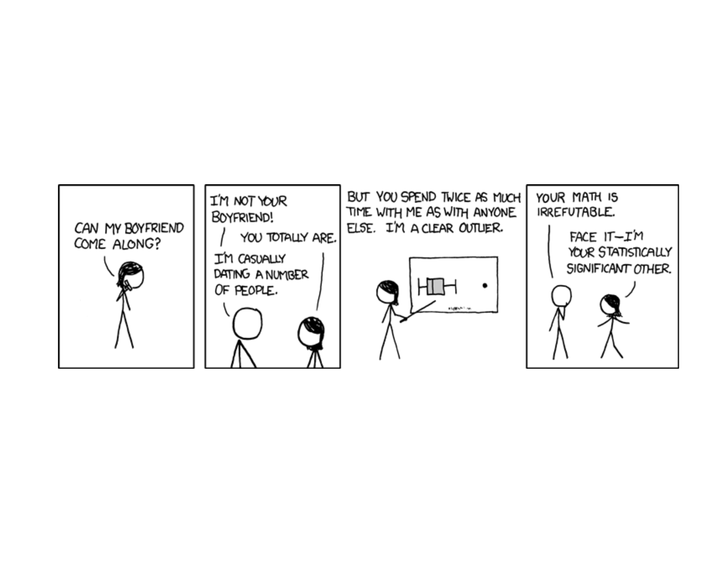
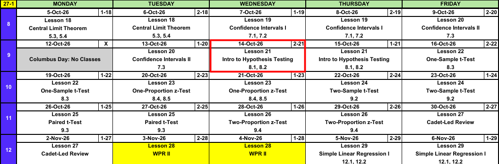
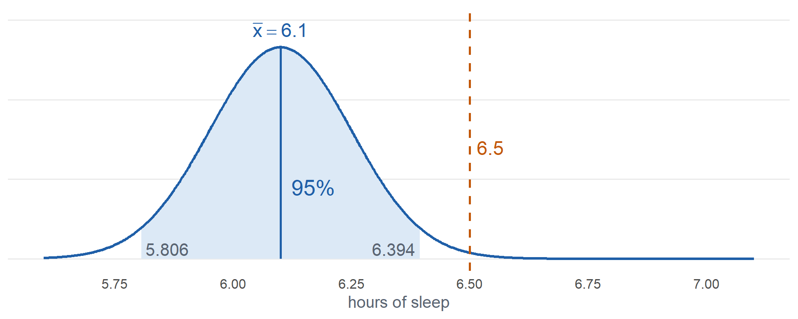
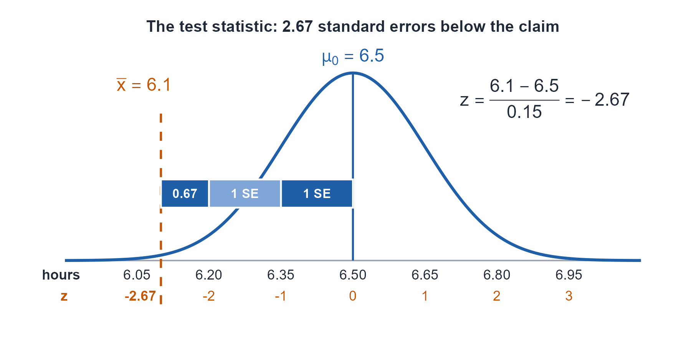
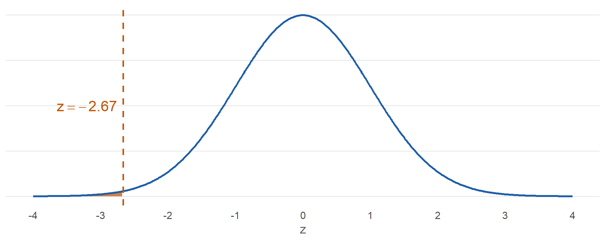
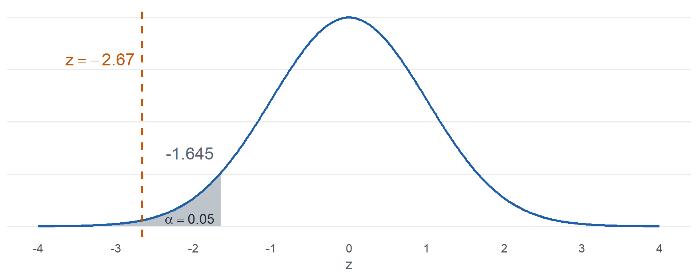
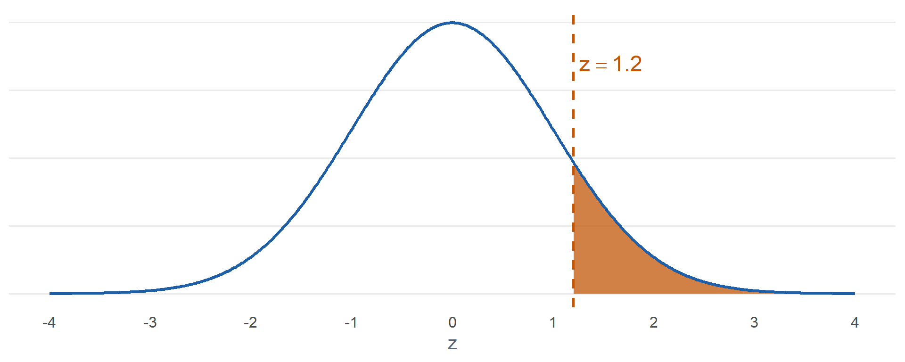
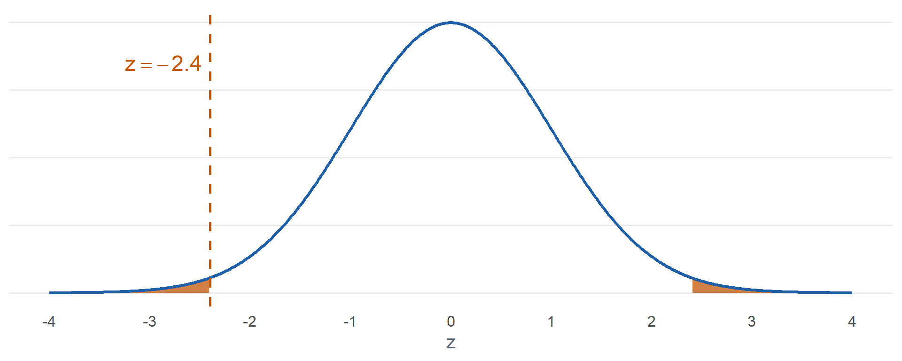
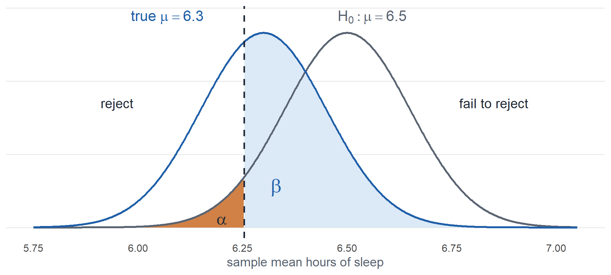

Lesson 21: Intro to Hypothesis Testing
Calendar

What We Did: Lessons 18 to 20
NoteReview: Central Limit Theorem (Lesson 18)
- \(\bar{X} \sim N\left(\mu,\ \left(\dfrac{\sigma}{\sqrt{n}}\right)^2\right)\), approximately, for \(n > 40\)
- Normal population: exact for any \(n\)
pnorm(x, mu, sigma/sqrt(n))- \(\hat{p} \sim N\left(p,\ \dfrac{p(1-p)}{n}\right)\), approximately, when \(np \ge 10\) and \(n(1-p) \ge 10\)
NoteReview: Confidence Intervals I (Lesson 19)
- \(\text{estimate} \pm \text{critical value} \times \text{standard error}\)
- Mean, \(n > 40\): \(\bar{x} \pm z_{\alpha/2}\,\dfrac{s}{\sqrt{n}}\)
- Proportion, \(n\hat{p} \ge 10\) and \(n(1-\hat{p}) \ge 10\): \(\hat{p} \pm z_{\alpha/2}\sqrt{\dfrac{\hat{p}(1-\hat{p})}{n}}\)
qnorm(0.975)for 95%,qnorm(0.95)for 90%,qnorm(0.995)for 99%- 95% confident describes the method
NoteReview: Confidence Intervals II (Lesson 20)
- Small sample, normal population: \(\bar{x} \pm t_{\alpha/2,\,n-1}\,\dfrac{s}{\sqrt{n}}\)
- \(\text{df} = n - 1\),
qt(0.975, n - 1)for 95% - \(t_{\alpha/2,\,n-1} > z_{\alpha/2}\), so the \(t\) interval is wider
- Sample size for width \(w\): \(n = \left(\dfrac{2\,z_{\alpha/2}\,\sigma}{w}\right)^2\), rounded up
What We’re Doing: Lesson 21
Objectives
- State null and alternative hypotheses and identify the test statistic and rejection region. (SLO 5)
- Carry out a \(z\) test for a population mean and compute and interpret the P-value. (SLO 5)
- Define Type I and Type II errors and describe how the Type II error probability (\(\beta\)) depends on the true parameter value and sample size. (SLO 6)
- Interpret a non-significant result: failing to reject \(H_0\) does not prove \(H_0\) is true. (SLO 6)
Required Reading
Devore 8.1, 8.2
Break!
Cal
The Takeaway for Today
NoteKey Concepts from Lesson 21
- Hypotheses: \(H_0: \mu = \mu_0\) versus \(H_a: \mu < \mu_0\), \(\mu > \mu_0\), or \(\mu \ne \mu_0\)
- Test statistic: \(z = \dfrac{\bar{x} - \mu_0}{s/\sqrt{n}}\), \(n > 40\)
- P-value:
pnorm(z),1 - pnorm(z), or2 * pnorm(-abs(z)) - Decision: reject \(H_0\) if the P-value is at or below \(\alpha\), otherwise fail to reject
- Type I error: reject a true \(H_0\), probability \(\alpha\)
- Type II error: fail to reject a false \(H_0\), probability \(\beta\)
- Failing to reject \(H_0\) does not prove \(H_0\)
Last Lessons
| Mean | Proportion | |
|---|---|---|
| Large sample | \(\bar{x} \pm z_{\alpha/2}\,\dfrac{s}{\sqrt{n}}\) random sample, \(n > 40\) |
\(\hat{p} \pm z_{\alpha/2}\sqrt{\dfrac{\hat{p}(1-\hat{p})}{n}}\) random sample, \(n\hat{p} \ge 10\) and \(n(1-\hat{p}) \ge 10\) |
| Small sample | \(\bar{x} \pm t_{\alpha/2,\,n-1}\,\dfrac{s}{\sqrt{n}}\) random sample, population approximately normal |
No interval in this course |
Warm-Up
Corps Squad
In a random sample of \(150\) cadets, \(48\) are on a corps squad team.
a) Build a 95% confidence interval for \(p\).
TipAnswer
\[\hat{p} = \frac{48}{150} = \mathbf{0.32}\]
\[0.32 \pm 1.96\sqrt{\frac{0.32(0.68)}{150}} = 0.32 \pm 0.0747 = (\mathbf{0.2453},\ \mathbf{0.3947})\]
0.32 + c(-1, 1) * qnorm(0.975) * sqrt(0.32 * 0.68 / 150)
b) What conditions allow us to do this?
TipAnswer
Random sample. \(n\hat{p} = 48 \ge 10\) and \(n(1-\hat{p}) = 102 \ge 10\).
c) Interpret the interval.
TipAnswer
We are 95% confident the true proportion of all cadets who are on a corps squad team is between 0.2453 and 0.3947.
Sleep
A random sample of \(64\) cadets averages \(\bar{x} = 6.1\) hours of sleep on a weeknight with \(s = 1.2\) hours.
a) Build a 95% confidence interval for \(\mu\).
TipAnswer
\[6.1 \pm 1.96\,\frac{1.2}{\sqrt{64}} = 6.1 \pm 0.294 = (\mathbf{5.806},\ \mathbf{6.394})\]
6.1 + c(-1, 1) * qnorm(0.975) * 1.2 / sqrt(64)
b) What conditions allow us to do this?
TipAnswer
Random sample. \(n = 64 > 40\).
c) Interpret the interval.
TipAnswer
We are 95% confident the true mean weeknight sleep of all cadets is between 5.806 and 6.394 hours.
Is 6.5 a Reasonable Value?
The Corps is told cadets average \(6.5\) hours of sleep on a weeknight. We suspect it is less.
Is \(6.5\) a reasonable value for \(\mu\)?

From Confidence Intervals to Hypothesis Testing
We start with a claim. Is \(6.5\) a reasonable value for \(\mu\)?
ImportantNull Hypothesis
\[H_0: \mu = 6.5\]
- The claim, assumed true
- Always an equality: \(H_0: \mu = \mu_0\)
- \(\mu_0\) is the null value
Alternatively, is \(\mu\) less than \(6.5\)?
ImportantAlternative Hypothesis
\[H_a: \mu < 6.5\]
- What we look for evidence of
- \(H_a: \mu < \mu_0\)
- \(H_a: \mu > \mu_0\)
- \(H_a: \mu \ne \mu_0\)
Test Statistic
Important\(z\) Test Statistic for a Mean
\[z = \frac{\bar{x} - \mu_0}{s/\sqrt{n}}\]
- Conditions: random sample, \(n > 40\)
- Counts standard errors between \(\bar{x}\) and \(\mu_0\)
- If \(H_0\) is true, \(Z \sim N(0, 1)\), approximately
- Use \(\sigma\) in place of \(s\) when \(\sigma\) is known
Sleep: \(\bar{x} = 6.1\), \(s = 1.2\), \(n = 64\)
\[z = \frac{6.1 - 6.5}{1.2/\sqrt{64}} = \frac{-0.4}{0.15} = -2.67\]

P-Value
Assuming the true mean really is \(6.5\), what is the probability of getting data this extreme or more extreme?

\[P(Z \le -2.67) = 0.0038\]
pnorm(-2.67)
ImportantP-Value
Assuming \(H_0\) is true, the probability of data this extreme or more extreme.
\[\text{P-value} = P(Z \le z)\]
pnorm(z)
\(\alpha\) is the significance level, chosen before looking at the data.
- P-value \(\le \alpha\): reject \(H_0\)
- P-value \(> \alpha\): fail to reject \(H_0\)
Sleep, \(\alpha = 0.05\): \(0.0038 \le 0.05\). Reject \(H_0\).
WarningThe P-value is not the probability that \(H_0\) is true
Rejection Region

At \(\alpha = 0.05\) we reject \(H_0\) for any \(z\) at \(-1.645\) or less. qnorm(0.05)
Sleep: \(-2.67 \le -1.645\). Reject \(H_0\).
The Steps
NoteHypothesis Test Steps
- Hypotheses: \(H_0\) and \(H_a\), in terms of the parameter
- Conditions
- Test statistic
- P-value
- Decision: reject \(H_0\) if the P-value is at or below \(\alpha\), otherwise fail to reject
- Conclusion in context
Push-Ups
The Corps has averaged \(38\) hand release push-ups. A company commander believes her company does more. A random sample of \(49\) of her cadets: \(\bar{x} = 39.2\), \(s = 7\). Test at \(\alpha = 0.05\).
1. Hypotheses
\[H_0: \mu = 38\]
\[H_a: \mu > 38\]
\(\mu\) is the true mean number of hand release push-ups for all cadets in the company.
2. Conditions
Random sample. \(n = 49 > 40\).
3. Test statistic
\[z = \frac{\bar{x} - \mu_0}{s/\sqrt{n}}\]
\[z = \frac{39.2 - 38}{7/\sqrt{49}} = \frac{1.2}{1} = \mathbf{1.20}\]
(39.2 - 38) / (7 / sqrt(49))
4. P-value

\[P(Z \ge 1.20) = \mathbf{0.1151}\]
1 - pnorm(1.2)
5. Decision
\(0.1151 > 0.05\). Fail to reject \(H_0\).
6. Conclusion
Since the P-value \(0.1151 > \alpha = 0.05\), fail to reject \(H_0\). At the 5% level there is insufficient evidence that the true mean number of hand release push-ups for all cadets in the company is greater than 38.
WarningFail to reject is not accept
- We did not show that \(\mu = 38\)
- The data are consistent with \(H_0\). They do not prove it.
- The same sample also fails to reject \(\mu = 38.5\) and \(\mu = 39\). They cannot all be true.
- Never say accept \(H_0\)
MRE Calories
An MRE is labeled \(1250\) calories. Is the true mean different? A random sample of \(100\) MREs: \(\bar{x} = 1238\), \(s = 50\). Test at \(\alpha = 0.05\).
1. Hypotheses
\[H_0: \mu = 1250\]
\[H_a: \mu \ne 1250\]
\(\mu\) is the true mean calories of all MREs.
2. Conditions
Random sample. \(n = 100 > 40\).
3. Test statistic
\[z = \frac{\bar{x} - \mu_0}{s/\sqrt{n}}\]
\[z = \frac{1238 - 1250}{50/\sqrt{100}} = \frac{-12}{5} = \mathbf{-2.40}\]
(1238 - 1250) / (50 / sqrt(100))
4. P-value

\[2\,P(Z \ge \lvert -2.40 \rvert) = \mathbf{0.0164}\]
2 * pnorm(-abs(-2.4))
5. Decision
\(0.0164 \le 0.05\). Reject \(H_0\).
6. Conclusion
Since the P-value \(0.0164 \le \alpha = 0.05\), reject \(H_0\). At the 5% level there is sufficient evidence that the true mean calories of all MREs differs from 1250.
Errors
| \(H_0\) true | \(H_0\) false | |
|---|---|---|
| Reject \(H_0\) | Type I error, probability \(\alpha\) | Correct |
| Fail to reject \(H_0\) | Correct | Type II error, probability \(\beta\) |
ImportantType I Error
- Reject \(H_0\) when \(H_0\) is true
- \(P(\text{Type I}) = \alpha\)
- We choose \(\alpha\)
Sleep:
\[H_0: \mu = 6.5\]
\[H_a: \mu < 6.5\]
Conclude cadets sleep less than 6.5 hours when the mean really is 6.5.
NoteType II Error
- Fail to reject \(H_0\) when \(H_0\) is false
- \(P(\text{Type II}) = \beta\)
- We do not choose \(\beta\)
Sleep: fail to conclude cadets sleep less than 6.5 hours when the mean really is less.
What does \(\beta\) depend on?
\(\alpha = 0.05\), \(\sigma = 1.2\), \(n = 64\). Reject \(H_0\) when \(z \le -1.645\), which is \(\bar{x} \le 6.5 - 1.645(0.15) = 6.253\).
Suppose the true mean is \(6.3\).

\[\beta = P(\bar{X} > 6.253 \text{ when } \mu = 6.3) = 0.622\]
1 - pnorm(6.253, 6.3, 0.15)
True mean, \(n = 64\)
| True \(\mu\) | \(\beta\) |
|---|---|
| 6.4 | 0.836 |
| 6.3 | 0.622 |
| 6.2 | 0.361 |
| 6.1 | 0.153 |
Sample size, true \(\mu = 6.3\)
| \(n\) | \(\beta\) |
|---|---|
| 36 | 0.740 |
| 64 | 0.622 |
| 144 | 0.361 |
| 256 | 0.153 |
- True \(\mu\) farther from \(\mu_0\): \(\beta\) decreases
- Larger \(n\): \(\beta\) decreases
- Smaller \(\alpha\): \(\beta\) increases
Inference Procedures
| Parameter | Conditions | Test statistic | Confidence interval | Critical value | P-value by \(H_a\) |
|---|---|---|---|---|---|
| \(\mu\) \(\sigma\) known, or \(\sigma\) unknown and \(n > 40\) |
Random sample \(\sigma\) known and population normal, or \(n > 40\) |
\(z = \dfrac{\bar{x} - \mu_0}{\sigma/\sqrt{n}}\) use \(s\) for \(\sigma\) when \(n > 40\) |
\(\bar{x} \pm z_{\alpha/2}\dfrac{\sigma}{\sqrt{n}}\) | qnorm(1-a/2) |
\(>\) 1-pnorm(z)\(<\) pnorm(z)\(\ne\) 2*pnorm(-abs(z)) |
| \(\mu\) \(\sigma\) unknown, \(n \le 40\) |
Random sample Population approx. normal |
\(t = \dfrac{\bar{x} - \mu_0}{s/\sqrt{n}} \sim t_{n-1}\) | \(\bar{x} \pm t_{\alpha/2,\,n-1}\dfrac{s}{\sqrt{n}}\) | qt(1-a/2,n-1) |
\(>\) 1-pt(t,n-1)\(<\) pt(t,n-1)\(\ne\) 2*pt(-abs(t),n-1) |
| \(p\) | Random sample | \(\hat{p} \pm z_{\alpha/2}\sqrt{\dfrac{\hat{p}(1-\hat{p})}{n}}\) the interval uses \(\hat{p}\) |
qnorm(1-a/2) |
||
| \(\mu_1 - \mu_2\) independent |
|||||
| \(\mu_D\) paired |
|||||
| \(p_1 - p_2\) |
Board Problems
Problem 1: Hypotheses
NoteQuestions
State \(H_0\) and \(H_a\).
The mean ACFT score in the Corps has been \(480\). The Commandant wants to know whether it has changed.
Issued boots are supposed to last \(12\) months on average. Supply suspects they last less.
The mess hall says the mean wait is \(8\) minutes. Cadets think it is longer.
What is wrong with \(H_0: \bar{x} = 20\)?
What is wrong with \(H_0: \mu < 20\)?
TipAnswers
- \[H_0: \mu = 480\]
\[H_a: \mu \ne 480\]
- \[H_0: \mu = 12\]
\[H_a: \mu < 12\]
- \[H_0: \mu = 8\]
\[H_a: \mu > 8\]
Hypotheses are about the parameter \(\mu\), not the statistic \(\bar{x}\).
\(H_0\) is always an equality.
Problem 2: Mess Hall Line
The mess hall says the mean wait is \(8\) minutes. Cadets think it is longer. A random sample of \(49\) waits: \(\bar{x} = 8.9\) minutes, \(s = 2.8\) minutes. Test at \(\alpha = 0.05\).
NoteQuestions
State the hypotheses.
What conditions allow us to do this?
Compute the test statistic.
State the rejection region. Is \(z\) in it?
Find the P-value.
Decide and conclude.
Would the decision change at \(\alpha = 0.01\)?
TipAnswers
- \[H_0: \mu = 8\]
\[H_a: \mu > 8\]
\(\mu\) is the true mean wait in the mess hall line.
Random sample. \(n = 49 > 40\).
\[z = \frac{\bar{x} - \mu_0}{s/\sqrt{n}}\]
\[z = \frac{8.9 - 8}{2.8/\sqrt{49}} = \frac{0.9}{0.4} = \mathbf{2.25}\]
(8.9 - 8) / (2.8 / sqrt(49))
Reject \(H_0\) if \(z \ge 1.645\).
qnorm(0.95). Yes, \(2.25 \ge 1.645\).\[P(Z \ge 2.25) = \mathbf{0.0122}\]
1 - pnorm(2.25)
Since the P-value \(0.0122 \le \alpha = 0.05\), reject \(H_0\). At the 5% level there is sufficient evidence that the true mean wait in the mess hall line is longer than 8 minutes.
Yes. \(0.0122 > 0.01\), so we would fail to reject \(H_0\).
Problem 3: Two Mile Run
The mean two mile run time in the Corps has been \(15.0\) minutes. Has it changed? A random sample of \(100\) cadets: \(\bar{x} = 15.2\) minutes, \(s = 1.5\) minutes. Test at \(\alpha = 0.05\).
NoteQuestions
State the hypotheses.
Compute the test statistic.
Find the P-value.
Decide and conclude.
True or false: we have shown that the mean two mile run time is \(15.0\) minutes.
True or false: there is an \(18\%\) chance that \(H_0\) is true.
TipAnswers
- \[H_0: \mu = 15\]
\[H_a: \mu \ne 15\]
\(\mu\) is the true mean two mile run time of all cadets.
- \[z = \frac{\bar{x} - \mu_0}{s/\sqrt{n}}\]
\[z = \frac{15.2 - 15}{1.5/\sqrt{100}} = \frac{0.2}{0.15} = \mathbf{1.33}\]
(15.2 - 15) / (1.5 / sqrt(100))
- \[2\,P(Z \ge 1.33) = \mathbf{0.1835}\]
2 * pnorm(-abs(1.33))
Since the P-value \(0.1835 > \alpha = 0.05\), fail to reject \(H_0\). At the 5% level there is insufficient evidence that the true mean two mile run time of all cadets differs from 15.0 minutes.
False. Failing to reject \(H_0\) does not prove \(H_0\).
False. The P-value is computed assuming \(H_0\) is true. It is not the probability that \(H_0\) is true.
Problem 4: New Training Plan
A battalion tries a new training plan. The mean ACFT score has been \(450\). They test at \(\alpha = 0.05\):
\[H_0: \mu = 450\]
\[H_a: \mu > 450\]
NoteQuestions
Describe a Type I error in context.
Describe a Type II error in context.
What is the probability of a Type I error?
Which gives the larger \(\beta\): a true mean of \(455\) or a true mean of \(470\)?
The battalion tests \(200\) Soldiers instead of \(50\). What happens to \(\beta\)?
The battalion lowers \(\alpha\) to \(0.01\). What happens to \(\beta\)?
TipAnswers
Conclude the plan raises the mean score above 450 when it does not.
Fail to conclude the plan raises the mean score when it does.
\(\alpha = \mathbf{0.05}\)
455. It is closer to the null value, so it is harder to detect.
Decreases.
Increases.
Before You Leave
Today
- \(H_0: \mu = \mu_0\) versus \(H_a\): \(<\), \(>\), or \(\ne\)
- \(z = \dfrac{\bar{x} - \mu_0}{s/\sqrt{n}}\), random sample, \(n > 40\)
- P-value:
pnorm(z),1 - pnorm(z),2 * pnorm(-abs(z)) - Reject \(H_0\) if the P-value is at or below \(\alpha\)
- Type I: reject a true \(H_0\) (\(\alpha\)). Type II: fail to reject a false \(H_0\) (\(\beta\))
- Fail to reject is not accept
Any questions?
Next Lesson
Lesson 22: One-Sample t-Test
- State and check the assumptions of the one-sample \(t\) test
- Carry out a one-sample \(t\) test for a population mean
- Relate the test conclusion to the corresponding confidence interval: a two-sided test rejects at level \(\alpha\) exactly when the null value lies outside the \(1-\alpha\) interval, and the null value falls on an endpoint when the P-value equals \(\alpha\)
Reading: Devore 8.3
Upcoming Graded Events
- WebAssign 8.1, 8.2: due at the start of Lesson 22
- EDA: due 18 October
- WPR II: Lesson 28 (covers Lessons 18-26)
- TEE: 15-18 Dec 2026